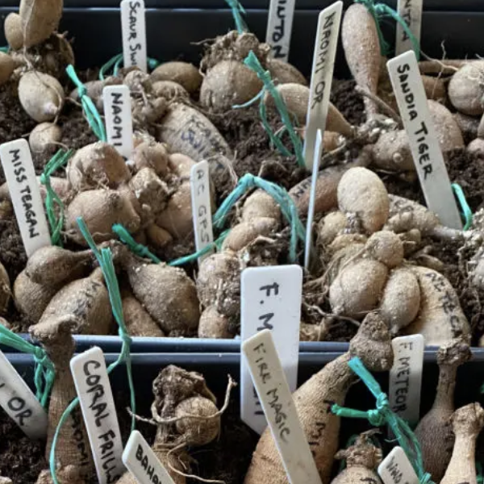

Growing dahlias is a rewarding hobby that can transform your garden into a vibrant tapestry of color and texture with just a bit of background knowlege and care. These stunning flowers, with their diverse shapes and colors, thrive in well-drained soil and full sunlight during the summer and early fall in the Northeastern US. Planting dahlias in the spring after the danger of frost has passed allows their tubers to establish strong root systems. With proper spacing, staking and careful attention to their water and nutrient needs, these resilient plants can reach impressive heights, creating a striking focal point in your garden. They're even happy to grow in pots if you have a sunny balcony or patio that needs cheering up.
Once the dahlias begin to bloom, their lush petals can range from deep reds to bright yellows, creating a dazzling display. Some blooms even have different inner and outer petal colors which are really striking. Regular deadheading encourages more blooms throughout the season. Additionally, staking taller varieties helps support their weight as they grow, ensuring they stand tall and proud. The sheer variety of dahlias, from dinnerplate to pompom types, offers endless opportunities for creativity in garden design and floral arrangements. You will have tons to give away to friends and neighbors and to festoon your home!
 As autumn approaches, the process of preparing dahlias for winter is essential to having tubers to plant the following spring. In colder climates, it's important to dig up the tubers before the first frost and store them in a cool, dry place to protect them from freezing. This can be done in paper bags and it's smart to write down which is which so you can know what you're planting the following spring or even trade tubers with friends. With a little care and attention, these beautiful blooms can return year after year, allowing gardeners to enjoy their splendor season after season. The joy of growing dahlias lies not only in their beauty but also in the nurturing journey that connects us to the rhythms of nature and community.